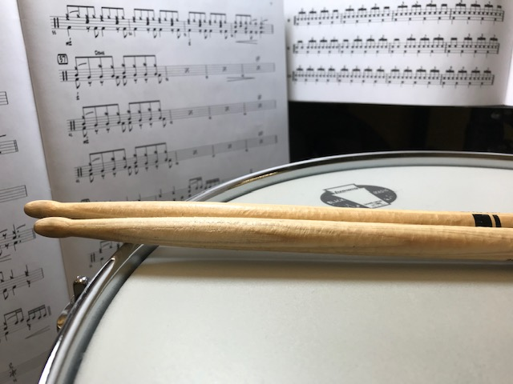
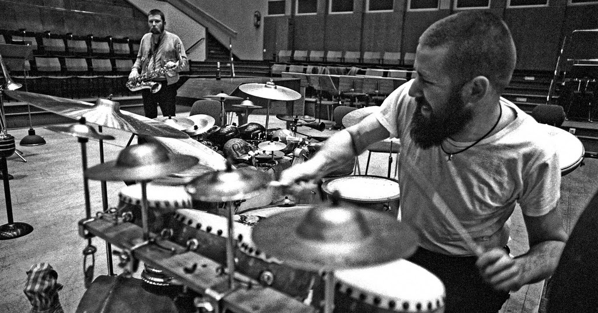

Due to the outbreak of Covid-19 - lessons will be conducted through Skype until further notice.
The Dublin School of Drums
Established in 1979, TDSD was set up to provide a high level of drum tuition specialising in drum-kit performance. Our teachers are renowned on Irish and foreign music scenes for their high level of musicianship and
for the diverse and numerous acts they have toured and recorded with. Also, the school regularly hosts workshops and lessons with guest teachers.
Our core staff is comprised of five highly experienced drummers on the Irish and international music scene. Each of our staff members teaches the gamut of drumming techniques from learning to tune the kit to drumming
in a professional setting.
Located in the heart of O'Connell street, our school is fully equipped with:
Two drum kits per room for both teacher and student
Recording equipment to record lessons for the student to listen to at home (Recorded to memory stick)
Rooms fully equipped with white board and sheet music to encourage chart reading abilities
Music players for playing along to recordings
A wide range of percussion instruments including various hand percussion instruments
The school owns two pianos on which students are encouraged to develop their ear with ear-training techniques presented in class

Included in your enrollment at the school is access to our exclusive lessons page. Here the student will find regularly added videos ranging from basic videos on rudiments to higher concept videos such as extended
soloing in a jazz context.
For more information or to enroll
Since attending TDSD my technique has improved considerably with help from Tony Williams, also my chops have never been better!
My abilities behind the kit have undergone a major breakthrough under Jimmy Chamberlain's teachings!
Samantha has taught me in one month what I struggled to learn from YouTube videos for two years!

After studying at the school for a year, my abilities were up to the standard to pass a cruise ship audition. I've been employed as a big band drummer with Regent Cruises going on four years in
May 2020!